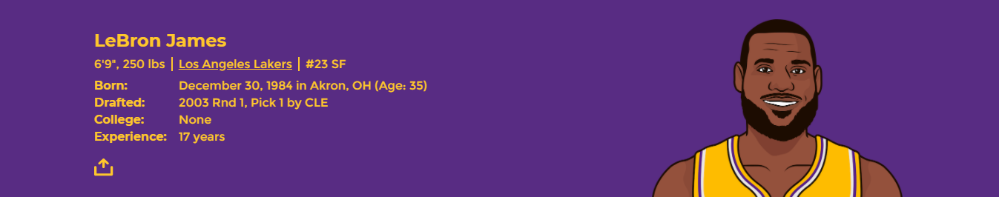
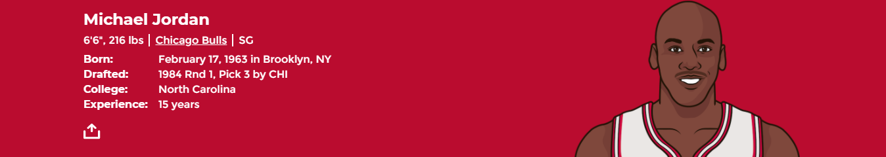

NBA basketbolunu takip eden bir çok kişi için bu soru yıllardır akıllardadır. Kimilerine göre sorunun cevabı şuan ve ebediyen Jordan iken kimileri Lebron'un onu geçtiğini düşünmektedir.
 
Kariyerinde daha önce Michael Jordan'a karşı oynayan ve 1991'deki Chicago
- Lakers NBA finalinde Jordan karşısında kaybeden Magic Johnson,
'LeBron mu, Jordan mı?' polemiklerine dahil oldu. Jordan ile çok iyi dost
olan Magic Johnson, LeBron James'in LA Lakers'a transferinde ise etkili
olan isimlerin başında geliyordu. James ve Jordan'ı karşılaştıran Johnson,
"LeBron harika bir basketbolcu ve şimdiye kadar oynayanların içinde en
yeteneklilerden bir tanesi ve tüm zamana bakarsak en iyisi.
Ama 'en büyük kim?' sorusunun cevabı Michael Jordan..." dedi. Johnson,
LeBron James'in halen basketbol oynadığını da hatırlattı ve "Belki
bırakana kadar daha fazla şey başarabilir" ifadelerini kullandı.